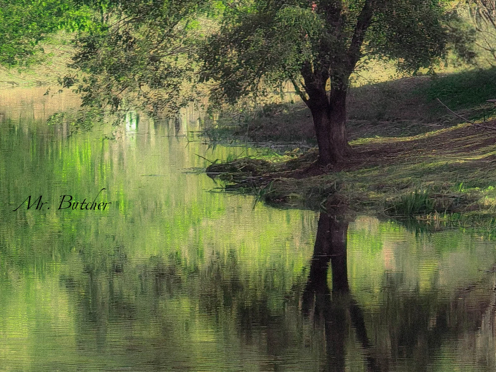

A PERSONAL PHOTO JOURNAL
The lightthat stays.
人像、草木与日常光影。把片刻，慢慢留下来。

SELECTED PHOTOGRAPHS
展示全部 14 张作品。
开启 JavaScript 可浏览完整摄影集与分类。你也可以先查看封面照片。
BEHIND THE CAMERA
Xiao Tu
关于人，也关于身边安静的事物。这里收集镜头里的一些日常。
左右键切换 · Esc 关闭